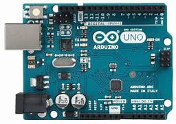
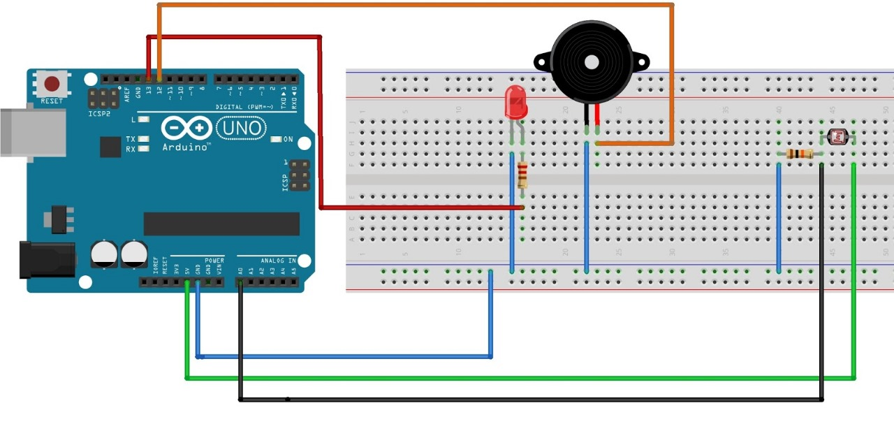

Ini adalah halaman Arduino Uno.
Arduino Uno adalah sebuah board mikrokontroler terbuka dengan mikrocontroller ATmega328P yang dikembangkan oleh Arduino.cc. Board ini dapat dioperasikan dengan Arduino Integrated Development Environment (IDE) melalui kabel USB tipe B. Arduino Uno memiliki 14 pin digital I/O (6 dari mereka dapat digunakan sebagai output PWM), 6 pin analog I/O, dan 1 pin LED.
Keunggulan Arduino Uno:
Mudah Digunakan: Arduino Uno didesain agar mudah digunakan oleh pemula maupun pengembang berpengalaman. Bahasa pemrograman yang digunakan adalah Arduino IDE yang berbasis bahasa Wiring, yang relatif mudah dipahami.
Open-Source: Arduino Uno merupakan proyek open-source, artinya desain hardware dan software-nya dapat diakses oleh siapa saja untuk dipelajari, dimodifikasi, dan dikembangkan lebih lanjut.
Komunitas yang Besar: Arduino Uno didukung oleh komunitas yang besar dan aktif, sehingga terdapat banyak tutorial, proyek open-source, dan forum diskusi yang dapat membantu pengguna.
Ekosistem Yang Luas: Terdapat berbagai macam shield (modul eksternal) yang kompatibel dengan Arduino Uno, seperti modul WiFi, Ethernet, sensor-sensor, dan perangkat lainnya, yang memperluas kemampuan dan fungsionalitasnya.
Berikut adalah gambaran Arduino Uno

Berikut adalah tabel Arduino Uno
| Gambar | Spesifikasi |
|---|---|
|
Berikut adalah project sederhana Arduino Uno.
